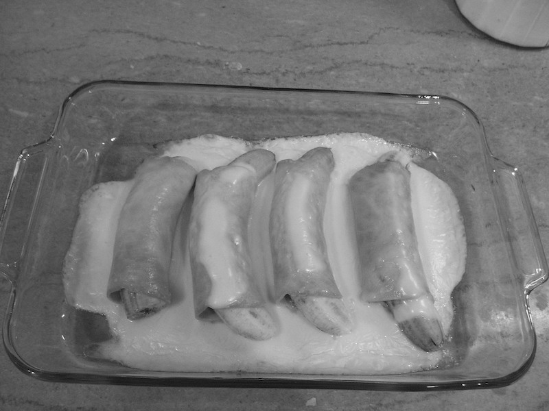

Ham & Bananas Hollandaise
Your great-grandmother has probably made something not too far off from this unholy triad during one of her free afternoons in the
age before the internet. What occasion would this be served for? A breafwast Wake? Some things are better left a mystery...

Ingredients
- 6 medium bananas
- 1/4 cup lemon juice
- 6 thin slices boiled ham (about 1/2 lb)
- 3 tablespoons prepared mustard
- 2 envelopes (1 1/4-oz size) hollandaise sauce mix
- 1/4 cup light cream
Directions
- Preheat oven to 400F. Lightly butter 2-quart, shallow baking dish.
- Peel bananas;sprinkle each with 1/2 tablespoon lemon juice, to prevent darkening.
- Spread ham slices with mustard. Wrap each banana in slice of ham. Arrange in single layer in casserole. Bake 10 minutes.
- Meanwhile, make sauce: In small saucepan, combine sauce mix with 1 cup water, 1 tablespoon lemon juice, and cream.
Heat, stirring, to boiling; pour over bananas. Bake 5 minutes longer, or until slightly golden. Nice with a green salad for bunch or lunch. Makes 6 servings.
Home Page